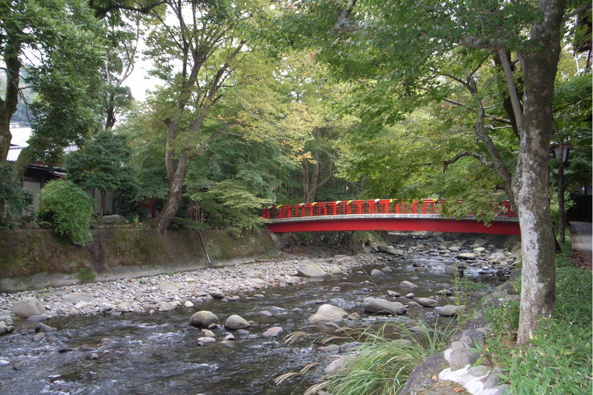
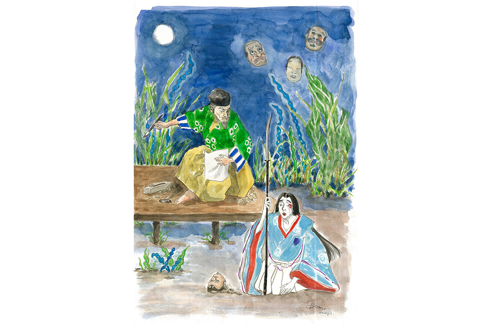

Префектура Сидзуока · Сюдзэндзи · история и кабуки
Сюдзэндзи: онсэн на Идзу, где разворачивается пьеса кабуки «Сюдзэндзи моногатари»

Онсэн Сюдзэндзи на полуострове Идзу называют маленьким Киото Идзу. Здесь оборвалась жизнь молодого сёгуна, и здесь же происходит действие пьесы кабуки о мастере масок, его дочери и этом сёгуне.
Место
Маленький Киото Идзу
Онсэн Сюдзэндзи вырос вокруг храма Сюдзэндзи, который, по преданию, основал Кукай (774–835), монах, известный под почётным именем Кобо-дайси. Он принёс в Японию учение эзотерического буддизма Сингон и стал одной из самых почитаемых фигур японской истории.
Через центр онсэна течёт река Кацура, над ней перекинут красный мост, а по берегам и переулкам проложены прогулочные тропы. Вдоль них стоят старые храмы и святилища, рёканы с горячими источниками и уличные лавки. За эту атмосферу Сюдзэндзи и прозвали маленьким Киото Идзу.
В Сюдзэндзи происходит действие пьесы «Сюдзэндзи моногатари» («Повесть о Сюдзэндзи»). Её герои: мастер масок Яся-о и сёгун Ёрииэ Минамото. О том, как судьба одного переплелась с судьбой другого, рассказывает знаток кабуки.
Пьеса
Лунная ночь на реке Кацура
«Там, где бьёт тёплый источник, и сердца людей теплы». Эти слова сёгун Ёрииэ Минамото (1182–1204) тихо говорит Кацуре, девушке из деревни при источниках, которую он только что приблизил к себе. Река, носящая то же имя, что и девушка, блестит в лунном свете.
Отец Кацуры режет маски, и зовут его Яся-о. Его покойная жена была женщиной гордой, привыкшей к изящной и роскошной жизни. Кацура унаследовала её нрав. Прожить всю жизнь дочерью ремесленника в глухой горной деревне она не хочет, поэтому внимание сёгуна для неё как исполнение мечты.
Сёгуном Ёрииэ остаётся лишь по названию. Власть у него отобрали мать, Масако Ходзё (1157–1225), и её родня. Вдова Ёритомо Минамото, первого сёгуна Камакуры, Масако вошла в историю как одна из самых влиятельных женщин японского средневековья. А Ёрииэ живёт в заточении в горах Идзу. Наверное, чтобы развеять скуку, он велит Яся-о вырезать маску со своим лицом.
Мастер раз за разом переносит срок. Наконец потерявший терпение Ёрииэ сам приходит в мастерскую поторопить его. Там его взгляд останавливается на готовой маске превосходной работы, а затем на Кацуре. Довольный, он забирает маску и тут же решает взять девушку в наложницы.
Ёрииэ ищет в этой любви утешение после политических неудач, Кацура надеется навсегда перестать быть деревенской девушкой. Луна освещает их, смотрящих друг на друга, и вдруг скрывается за тучей. В темноте к ним подкрадываются убийцы, присланные из Камакуры.

История
Маска с печатью смерти
Яся-о снова и снова переделывал маску и тянул со сроком потому, что на каждой готовой маске проступала печать смерти. Он не решался отдать её, но Ёрииэ почти силой забрал маску со словами «Мне этого довольно» и ушёл из мастерской вместе с Кацурой. Может быть, печать смерти предсказывала его собственную судьбу?
В основе пьесы лежит исторический факт: Ёрииэ Минамото убили на онсэне Сюдзэндзи, когда он принимал ванну. Говорят, в купальню налили лак, тело сёгуна распухло, и так он умер.
Храм Сюдзэндзи
- Адрес
- префектура Сидзуока, Идзу, Сюдзэндзи, 964
- Телефон
- +81 558-72-0053